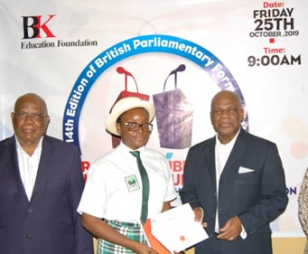

Community health education
Programmes
To meet our objectives, we run the following programmes and activities:

School health debate
Secondary schools from Calabar (Nigeria) are invited to enter teams to debate current health issues in order to further the understanding of key health issues within the community. We have held annual debates since 2005, however due to Covid-19 restrictions the last inter-school debate took place in 2019. The debates are scheduled to start again in January 2024.

Facilitating training
We offer a venue, that can be hired free of charge, for the training of health promoters, community health workers and Traditional Birth Attendants (TBAs) and we have supported the delivery of these sessions by providing presentation resources (laptop/projector) and refreshments.

Hosting health seminars
We have hosted awareness activities focused on HIV/AIDS, oral health care, drug misuse, cardiovascular diseases, diet and nutrition.
Grants for medical students
We award annual grants to the best medical students following the Bachelor of Medicine (MB) and final Bachelor of Medicine and Surgery (MBBCH) examinations at the University of Calabar’s College of Medical Sciences.

Supporting visually impaired and disabled individuals
We offer a venue and support training events for individuals with visual impairments and other disabilities. Each year we host an end of year party for disabled members of the Calabar community.
Places to learn and gather
Resources
The primary resources we provide to the community are:
Reference library
A reference library open to the public from Monday to Friday, 8:00am to 5:00pm. The library is used by a wide range of students from the local secondary school, colleges and university. We have an electricity generator which means that students are able to study during the power outages that occur frequently.
Meeting space
A meeting space that can be booked by community groups for use in health promotion activities. This space has been utilised by a range of organisations and community groups to hold health promotions and training events.

BK International House, Plot 11, Block N, Ikot Ansa Housing Estate – Phase 1, Murtala Mohammed Highway, Calabar.
Dr Bassey Kubiangha Education Trust is a registered charity in England & Wales (1107107)